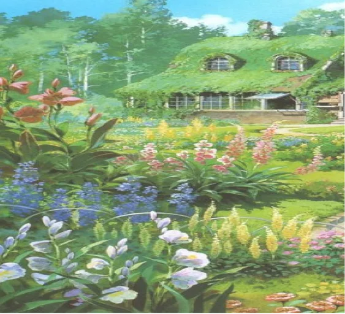

"Je vole parce que ça me donne l'impression d'être libre"- La Quête Passionnée de la Liberté

Dans le monde magique du Studio Ghibli, au sommet d'un ciel azur, la jeune sorcière Kiki s'envole gracieusement sur son balai magique. Dans cet instant fugace, elle prononce des mots qui continuent d'inspirer des générations entières :"Je vole parce que ça me donne l'impression d'être libre."
Cette réplique emblématique résonne comme une mélodie enchanteresse de la jeunesse, une période de la vie où le besoin de liberté et d'indépendance est un appel ardent et irrésistible. Kiki, la jeune sorcière en herbe, incarne l'esprit intrépide de la jeunesse, avide de se déployer dans le monde, de défier les conventions et de se perdre dans l'immensité du ciel.
 Illustration, Kiki’s Delivery service
Illustration, Kiki’s Delivery service
"Je vole parce que ça me donne l'impression d'être libre" exprime un profond désir de s'affranchir des chaînes du conformisme , de la routine et des attentessociales. Pour les jeunes, cette quête de liberté est un voyage initiatique, une recherche de leur propre voie dans un monde qui parfois semble restreindre leurs rêves et leurs ambitions.
Kiki, en volant sur son balai magique à travers les vastes cieux, représente l'évasion de la jeunesse, la fuite versl'inconnu, l'exploration de terresinexplorées. C'est un acte de courage, un saut dans le vide avec la conviction que les ailes de la jeunesse la soutiendront, que l'horizon est prometteur et que la liberté est la plus précieuse des récompenses.
 Illustration, Kiki’s Delivery serviceLa musique qui accompagne cette scène est un écho émotionnel de cette quête. Les notes enchanteresses de Joe Hisaishi portent l'auditeur vers des sommets éthérés , évoquant un sentiment de légèreté, de joie et d'émerveillement. C'est un hymne à la jeunesse, un cri de ralliement pour tous ceux qui cherchent à embrasser la vie avec une passion indomptable.
La citation évoque une aspiration à embrasser le monde avec une perspective libre, à suivre ses rêvessans entrave, à se sentir vivant et en connexion avec l'univers. C'est une déclaration d'intention, une invitation à la jeunesse et à tous ceux qui désirent se sentir vivants, à relever le défi, à s'envoler vers l'inconnu, à poursuivre leurs rêves avec la certitude que la liberté est leur héritage.
En somme,"Je vole parce que ça me donne l'impression d'être libre" est une invitation à plonger tête la première dans la quête de la liberté, à suivre son cœur, à se dégager des contraintes, à croire en ses propres capacités et à s'épanouir dans un monde rempli de possibilités infinies. C'est une ode à la jeunesse, à l'aspiration à une vie pleine de sens et de découverte, et à l'envol passionné vers un avenir radieux. C'est l'appel de la liberté, un hymne à la jeunesse et à la quête perpétuelle de l'indépendance.
Lire l’article film : Kiki la petite sorcière

Lire l’article auteur : Hayao MIYAZAKI
 Illustration, Kiki’s Delivery service
Illustration, Kiki’s Delivery service